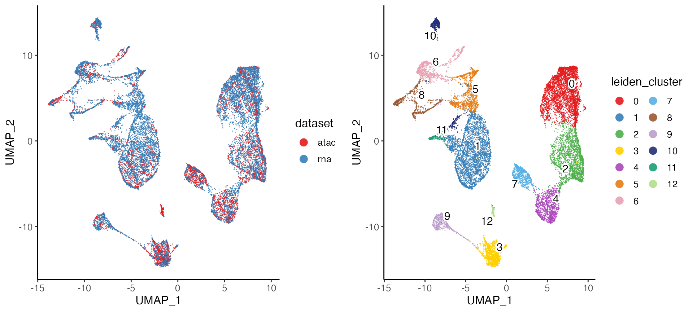
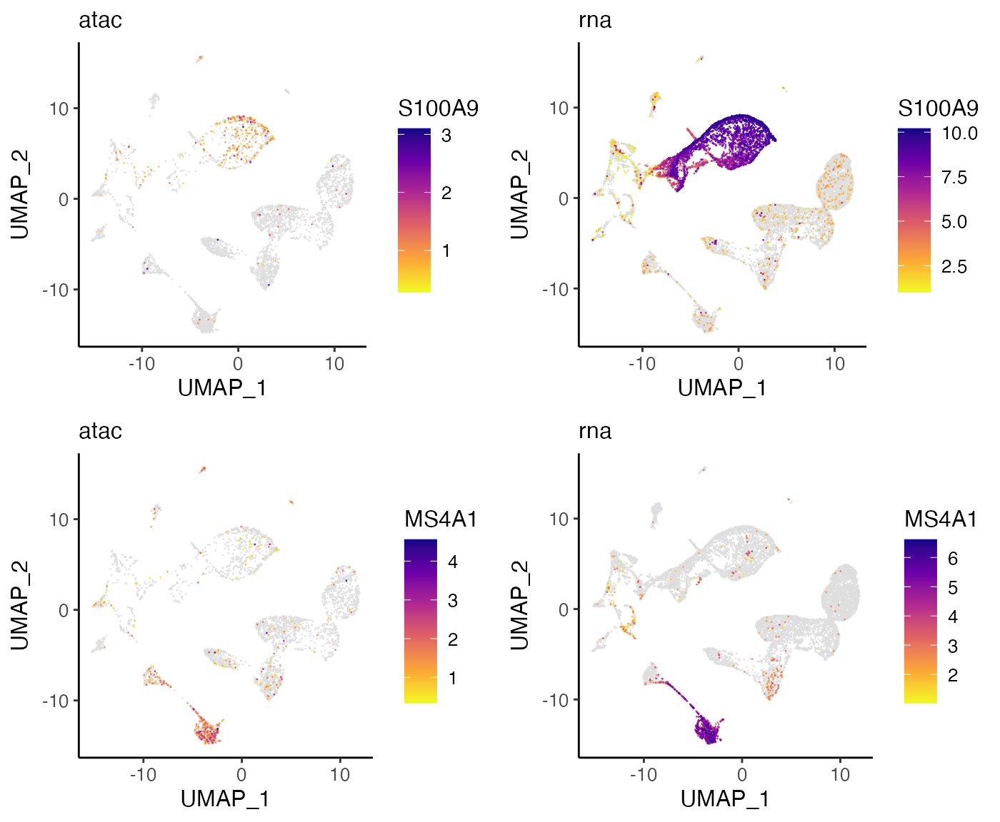
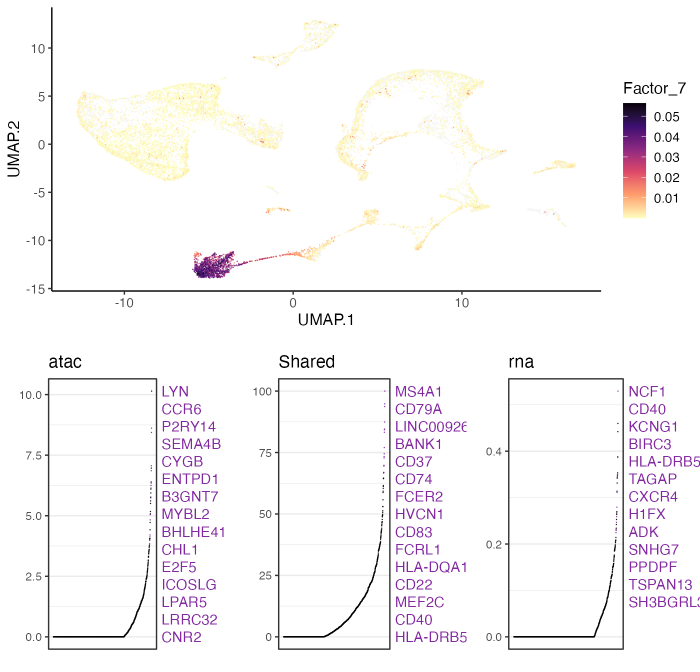
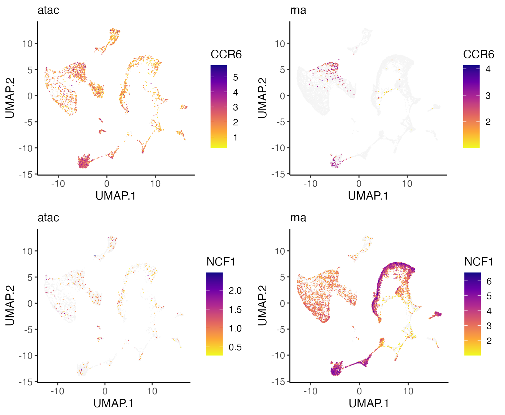
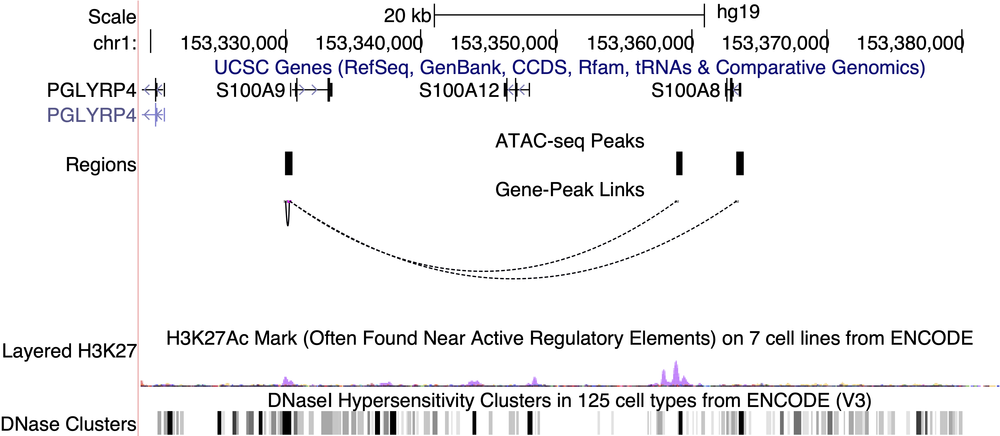
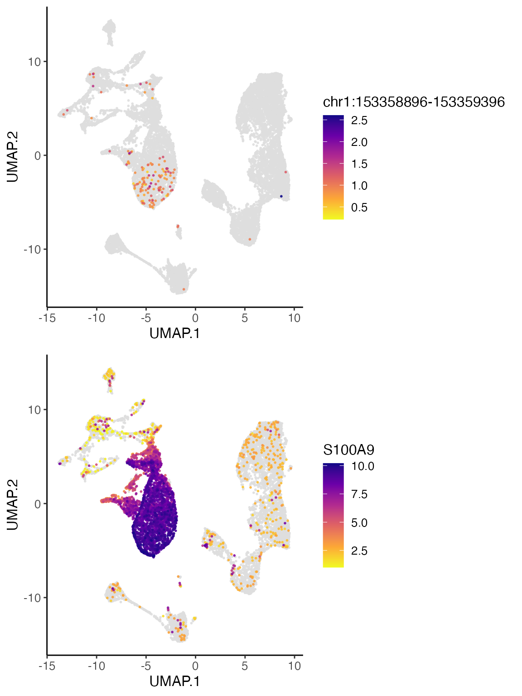

vignettes/articles/Integrating_scRNA_and_scATAC_data.Rmd
Integrating_scRNA_and_scATAC_data.RmdIn this tutorial, we will demonstrate LIGER’s ability to jointly define cell types by leveraging multiple single-cell modalities. For example, the integration of single-cell RNA-seq and single-cell ATAC-seq enables cell type definitions that incorporate both gene expression and chromatin accessibility data. Such joint analysis allows not only the taxonomic categorization of cell types, but also a deeper understanding of their underlying regulatory networks. The pipeline for jointly analyzing scRNA-seq and scATAC-seq is similar to that for integrating multiple scRNA-seq datasets in that both rely on joint matrix factorization and quantile normalization. The main differences are: (1) scATAC-seq data needs to be processed into gene-level values; (2) gene selection is performed on the scRNA-seq data only; and (3) downstream analyses can use both gene-level and intergenic information.
In order to jointly analyze scRNA and scATAC-seq data, we first need to transform the scATAC-seq data–a genome-wide epigenomic measurement–into gene-level counts which are comparable to gene expression data from scRNA-seq. Most previous single-cell studies have used an approach inspired by traditional bulk ATAC-seq analysis: identifying chromatin accessibility peaks, then summing together all peaks that overlap each gene. This strategy is also appealing because the 10X CellRanger pipeline, a commonly used commercial package, automatically outputs such peak counts. However, we find this strategy less desirable because: (1) peak calling is performed using all cells, which biases against rare cell populations; (2) gene body accessibility is often more diffuse than that of specific regulatory elements, and thus may be missed by peak calling algorithms; and (3) information from reads outside of peaks is discarded, further reducing the amount of data in the already sparse measurements. Instead of summing peak counts, we find that the simplest possible strategy seems to work well: counting the total number of ATAC-seq reads within the gene body and promoter region (typically 3 kb upstream) of each gene in each cell.
For convenience, we have prepared the pre-processed data which are ready to use.
library(rliger2)
if (!file.exists("liger_BMMC_rna_D1T1.rds"))
download.file("https://figshare.com/ndownloader/files/40054858",
destfile = "liger_BMMC_rna_D1T1.rds")
D1T1 <- readRDS("liger_BMMC_rna_D1T1.rds")
if (!file.exists("liger_BMMC_rna_D1T2.rds"))
download.file("https://figshare.com/ndownloader/files/40054861",
destfile = "liger_BMMC_rna_D1T2.rds")
D1T2 <- readRDS("liger_BMMC_rna_D1T2.rds")
if (!file.exists("liger_BMMC_atac_D5T1.rds"))
download.file("https://figshare.com/ndownloader/files/40054891",
destfile = "liger_BMMC_atac_D5T1.rds")
D5T1 <- readRDS("liger_BMMC_atac_D5T1.rds")You can also follow the following tutorial if you would like to start from the very beginning. Note that in this part, we included the details of running this preprocessing workflow for only one sample. Users should re-run this counting step multiple times if for more than one scATAC-seq sample.
Note also that several commands need to be run through the Command Line Interface instead of the R Console or IDE (RStudio). We also employ the bedmap command from the BEDOPS tool to make a list of cell barcodes that overlap each gene and promoter. The gene body and promoter indexes are .bed files, which indicate gene and promoter coordinates. Since bedmap expects sorted inputs, the fragment output from CellRanger, gene body and promoter indexes should all be sorted.
We show below how to perform these steps for scATAC data generated by the 10X Chromium system, the most widely used scATAC-seq protocol. The starting input for this process is the file fragments.tsv output by CellRanger, which contains all ATAC reads that passed filtering steps.
1. We must first sort fragments.tsv by chromosome,
start, and end position using the sort command line utility. The
-k option lets the user sort the file on a certain column;
including multiple -k options allows sorting by multiple
columns simultaneously. The n behind -k stands
for “numeric ordering”. Here the sorted BED file order is defined first
by lexicographic chromosome order (using the parameter
-k1,1), then by ascending integer start coordinate order
(using parameter -k2,2n), and finally by ascending integer
end coordinate order (using parameter -k3,3n). Note that
this step may take a while, since the input fragment file is usually
very large (for example, a typical fragment file of 4-5 GB can take
about 40 minutes).
Gene body and promoter indexes should also be sorted using the same strategy for sorting fragments output files:
sort -k 1,1 -k2,2n -k3,3n hg19_genes.bed > hg19_genes.sort.bed
sort -k 1,1 -k2,2n -k3,3n hg19_promoters.bed > hg19_promoters.sort.bed2. Use bedmap command to calculate
overlapping elements between indexes and fragment output files:
bedmap --ec --delim "\t" --echo --echo-map-id hg19_promoters.sort.bed atac_fragments.sort.bed > atac_promoters_bc.bed
bedmap --ec --delim "\t" --echo --echo-map-id hg19_genes.sort.bed atac_fragments.sort.bed > atac_genes_bc.bedImportant flags of bedmap command are as follows:
--delim. This changes output delimiter from ‘|’ to
indicated delimiter between columns, which in our case is “\t”.--ec. Adding this will check all problematic input
files.--echo. Adding this will print each line from reference
file in output. The reference file in our case is gene or promoter
index.--echo-map-id. Adding this will list IDs of all
overlapping elements from mapping files, which in our case are cell
barcodes from fragment files.3. We then import the bedmap outputs into the R
Console or RStudio. Note that the as.is option in
read.table() is specified to prevent the conversion of
character columns to factor columns:
genes.bc <- read.table(file = "atac_genes_bc.bed", sep = "\t", as.is = c(4,7), header = FALSE)
promoters.bc <- read.table(file = "atac_promoters_bc.bed", sep = "\t", as.is = c(4,7), header = FALSE)Cell barcodes are then split and extracted from the outputs. We recommend the user to filter out those barcodes which have a total number of reads lower than a certain threshold, for example, 1500. This threshold can be adjusted according to the size and quality of the samples.
bc <- genes.bc[,7]
bc_split <- strsplit(bc,";")
bc_split_vec <- unlist(bc_split)
bc_unique <- unique(bc_split_vec)
bc_counts <- table(bc_split_vec)
bc_filt <- names(bc_counts)[bc_counts > 1500]
barcodes <- bc_filt4. We can then use LIGER’s
makeFeatureMatrix() function to calculate accessibility
counts for gene body and promoter individually. This function takes the
output from bedmap and efficiently counts the number of
fragments overlapping each gene and promoter. We could count the genes
and promoters in a single step, but choose to calculate them separately
in case it is necessary to look at gene or promoter accessibility
individually in downstream analyses.
library(rliger2)
gene.counts <- makeFeatureMatrix(genes.bc, barcodes)
promoter.counts <- makeFeatureMatrix(promoters.bc, barcodes)Next, these two count matrices need to be re-sorted by gene symbol. We then add the matrices together, yielding a single matrix of gene accessibility counts in each cell.
gene.counts <- gene.counts[order(rownames(gene.counts)),]
promoter.counts <- promoter.counts[order(rownames(promoter.counts)),]
D5T1 <- gene.counts + promoter.counts
colnames(D5T1)=paste0("D5T1_",colnames(D5T1))5. Once the gene-level scATAC-seq counts are
generated, the read10X() function from LIGER can be used to
read scRNA-seq count matrices output by CellRanger. You can pass in a
directory (or a list of directories) containing raw outputs (for
example, "/Sample_1/outs/filtered_feature_bc_matrix") to
the parameter sample.dirs. Next, a vector of names to use
for the sample (or samples, corresponding to sample.dirs)
should be passed to parameter sample.names as well. LIGER
can also use data from any other protocol, as long as it is provided in
a genes x cells R matrix format.
bmmc.rna <- read10X(path = "/path_to/filtered_feature_barcode_matrix", sampleNames = "rna")We can now create a LIGER object with the createLiger()
function. We also remove unneeded variables to conserve memory.
Additionally, we merge the two RNA datasets into one.
bmmc.rna <- cbind(D1T1, D1T2)
bmmcLiger <- createLiger(list(atac = D5T1, rna = bmmc.rna),
modal = c("atac", "rna"))Preprocessing steps are needed before running iNMF. Each dataset is
normalized to account for differences in total gene-level counts across
cells using the normalize function. Next, highly variable genes from
each dataset are identified and combined for use in downstream analysis.
Note that by setting the parameter useDataset = "rna",
genes will be selected only from the scRNA-seq dataset (the second
dataset) by the selectGenes() function. We recommend not
using the ATAC-seq data for variable gene selection because the
statistical properties of the ATAC-seq data are very different from
scRNA-seq, violating the assumptions made by the statistical model we
developed for selecting genes from RNA data. Finally, the
scaleNotCenter() function scales normalized datasets
without centering by the mean, giving the non-negative input data
required by iNMF.
bmmcLiger <- bmmcLiger %>%
normalize() %>%
selectGenes(useDatasets = "rna") %>%
scaleNotCenter()We next perform joint matrix factorization (iNMF) on the normalized
and scaled RNA and ATAC data. This step calculates metagenes–sets of
co-expressed genes that distinguish cell populations–containing both
shared and dataset-specific signals. The cells are then represented in
terms of the “expression level” of each metagene, providing a
low-dimensional representation that can be used for joint clustering and
visualization. To run iNMF on the scaled datasets, we use the
runIntegration() function with proper hyperparameter
settings.
bmmcLiger <- runIntegration(bmmcLiger, k = 20)Using the metagene factors calculated by iNMF, we then assign each cell to the factor on which it has the highest loading, giving joint clusters that correspond across datasets. We then perform quantile normalization by dataset, factor, and cluster to fully integrate the datasets. To perform this analysis, typing in:
bmmcLiger <- quantileNorm(bmmcLiger)The quantileNorm() function gives joint clusters that
correspond across datasets, which are often completely satisfactory and
sufficient for downstream analyses. However, if desired, after quantile
normalization, users can additionally run the Leiden algorithm for
community detection, which is widely used in single-cell analysis and
excels at merging small clusters into broad cell classes. This can be
achieved by running the runCluster() function. Several
tuning parameters, including resolution,
nNeighbors, and prune control the number of
clusters produced by this function. For this dataset, we use a
resolution of 0.2.
bmmcLiger <- runCluster(bmmcLiger, nNeighbors = 30, resolution = 0.2)Starting from rliger 2.0.0, cluster labeling will be stored in cell metadata, which can be accessed with
cellMeta(bmmcLiger). Use argumentclusterNameto specify unique variable names for the result can enable storing multiple cluster labeling variables at the same time.
In order to visualize the clustering results, the user can use two
dimensionality reduction methods supported by LIGER: t-SNE and UMAP. We
find that often for datasets containing continuous variation such as
cell differentiation, UMAP better preserves global relationships,
whereas t-SNE works well for displaying discrete cell types, such as
those in the brain. The UMAP algorithm (called by the
runUMAP() function) scales readily to large datasets. The
runTSNE() function also includes an option to use “FFtSNE”,
a highly scalable implementation of t-SNE that can efficiently process
huge datasets. For the BMMC dataset, we expect to see continuous lineage
transitions among the differentiating cells, so we use UMAP to visualize
the data in two dimensions:
bmmcLiger <- runUMAP(bmmcLiger, nNeighbors = 30, minDist = 0.3)Starting from rliger 2.0.0, dimensionality reduction matrices will be stored in cell metadata, which can be accessed with
cellMeta(bmmcLiger). Use argumentdimredNameto specify unique variable names for the result can enable storing multiple low-dimensional representation matrices as variables at the same time.
We provide a variety of utilities for visualization and analysis of clustering, gene expression across datasets, and comparisons of cluster assignments. Here we demonstrate several commonly used examples.
plotByDatasetAndCluster() returns two graphs, generated
by t-SNE or UMAP in the previous step. The first colors cells by dataset
of origin, and the second by cluster as determined by previous
clustering step. The plots provide visual confirmation that the datasets
are well aligned and the clusters are consistent with the shape of the
data as revealed by UMAP.
The two subplots can individually be generated with
plotDatasetDimRed() and plotClusterDimRed(),
respectively.
options(ligerDotSize = 0.5)
plotByDatasetAndCluster(bmmcLiger)
LIGER employs the Wilcoxon rank-sum test to identify marker genes
that are differentially expressed in each cell type using the following
settings. We provide parameters that allow the user to select which
datasets to use (useDatasets) and whether to compare across
clusters or across datasets within each cluster (method
with options "clusters" or "datasets"). To
identify marker genes for each cluster combining scATAC and scRNA
profiles, typing in:
marker.cluster <- runMarkerDEG(bmmcLiger)The number of significant genes identified by
runMarkerDEG() varies and depends on the datasets used. And
the raw output of the function contains the statistics of all tested
genes in all groups (clusters). In order to pick out the top markers for
each cluster, we strongly suggest using package “dplyr”, which provides
a user-friendly interface for data table manipulation. The following
code chunk first filters the markers which are statistically and
biologically significant. For example, we filter the output by taking
markers which have padj (Benjamini-Hochberg adjusted p-value) less than
0.05 and logFC (log fold change between observations in group versus
out) larger than 3. Then for each cluster, we sort the markers primarily
by its padj value in ascending order. Given that mathematically, the
lowest padj values are rounded to 0 as they are too small, for genes
tying on this metric, we then sort the markers by logFC in descending
order. Finally, we select the top 20 markers for each cluster.
library(dplyr)
marker.cluster <- marker.cluster %>%
filter(padj < 0.05, logFC > 3) %>%
group_by(group) %>%
arrange(padj, -logFC, .by_group = TRUE) %>%
top_n(20)We can then view the selected top 20 markers for cluster 1 by:
## # A tibble: 20 × 10
## # Groups: group [1]
## feature group avgExpr logFC statistic auc pval padj pct_in
## <chr> <fct> <dbl> <dbl> <dbl> <dbl> <dbl> <dbl> <dbl>
## 1 HLA-DRB5 3 11.5 6.36 14408466. 0.741 2.43e-238 8.84e-236 71.8
## 2 POU2F2 3 9.53 5.22 13466692 0.692 1.17e-167 1.96e-165 62.0
## 3 CD74 3 16.2 4.62 13878368 0.713 2.95e-143 3.65e-141 93.3
## 4 PRDM2 3 9.24 4.32 13119802 0.674 1.43e-128 1.56e-126 60.6
## 5 LYN 3 9.55 4.49 13071810. 0.672 4.92e-124 5.10e-122 62.3
## 6 BACH2 3 8.40 4.37 12795575 0.658 1.48e-119 1.44e-117 55.0
## 7 ISG20 3 10.9 4.72 13137522 0.675 1.67e-116 1.53e-114 70.8
## 8 ADK 3 8.10 3.90 12594115 0.647 7.23e-102 5.46e-100 53.3
## 9 PLEKHA2 3 7.95 3.75 12508320. 0.643 7.47e- 96 5.27e- 94 52.7
## 10 PRKCB 3 11.8 3.45 12868230. 0.662 4.15e- 88 2.49e- 86 76.3
## 11 SNX2 3 7.90 3.34 12324160. 0.634 1.65e- 80 8.41e- 79 51.3
## 12 EZR 3 10.1 3.49 12571052. 0.646 1.98e- 79 9.84e- 78 65.7
## 13 ANKRD44 3 9.65 3.43 12485332 0.642 3.24e- 77 1.51e- 75 62.6
## 14 PDE4B 3 8.85 3.41 12287756. 0.632 4.68e- 71 1.93e- 69 58.1
## 15 IQSEC1 3 7.94 3.19 12166120 0.625 5.95e- 70 2.40e- 68 52.0
## 16 SMAP2 3 9.94 3.22 12352735 0.635 2.08e- 67 8.05e- 66 65.0
## 17 DGKD 3 7.23 3.06 11926322. 0.613 2.59e- 61 8.85e- 60 48.1
## 18 ZBTB20 3 7.55 3.04 11938390 0.614 1.30e- 59 4.28e- 58 49.6
## 19 STK17A 3 7.90 3.01 11987136. 0.616 3.12e- 59 1.02e- 57 51.7
## 20 FAM53B 3 7.09 3.02 11781407 0.606 4.61e- 55 1.38e- 53 47.1
## # ℹ 1 more variable: pct_out <dbl>We also provide functions to check these markers by visualizing their
expression and gene loadings across datasets. You can use the
plotGeneDimRed() to visualize the expression or
accessibility of a marker gene, which is helpful for visually confirming
putative marker genes or investigating the distribution of known markers
across the cell sequenced. Such plots can also confirm that divergent
datasets are properly aligned.
For instance, we can plot S100A9, which the Wilcoxon test identified as a marker for Cluster 1, and MS4A1, a marker for Cluster 4:
plots <- plotGeneDimRed(bmmcLiger, c("S100A9", "MS4A1"), splitBy = "dataset",
titles = c(names(bmmcLiger), names(bmmcLiger)))
cowplot::plot_grid(plotlist = plots, nrow = 2)
These plots indicate that S100A9 and MS4A1 are indeed specific markers for Cluster 1 and Cluster 4, respectively, with high values in these cell groups and low values elsewhere. Furthermore, we can see that the distributions are strikingly similar between the RNA and ATAC datasets, indicating that LIGER has properly aligned the two data types.
A key advantage of using iNMF instead of other dimensionality
reduction approaches such as PCA is that the dimensions (factors) are
individually interpretable. For example, a particular cell type is often
captured by a single dimension of the space. Furthermore, iNMF
identifies both shared and dataset-specific features along each
dimension, giving insight into exactly how corresponding cells across
datasets are both similar and different. Too visualize this information,
users need to run getFactorMarkers() first in order to have
the statistics prepared for ranking the factor loading. The function
plotGeneLoadings() then creates visualization for the
exploration. For example, we can visualize the factor loading of Factor
7 typing in:
factorMarker <- getFactorMarkers(bmmcLiger, dataset1 = "atac", dataset2 = "rna")
plotGeneLoadings(bmmcLiger, markerTable = factorMarker, useFactor = 12, nLabel = 15)
plots <- plotGeneDimRed(bmmcLiger, c("CCR6", "NCF1"), splitBy = "dataset",
titles = c(names(bmmcLiger), names(bmmcLiger)))
cowplot::plot_grid(plotlist = plots, nrow = 2)
These plots confirm that the expression and accessibility of these genes show clear differences. CCR6 shows nearly ubiquitous chromatin accessibility but is expressed only in clusters 2 and 4. The accessibility is highest in these clusters, but the ubiquitous accessibility suggests that the expression of CCR6 is somewhat decoupled from its accessibility, likely regulated by other factors. Conversely, NCF1 shows high expression in clusters 1, 6, 9, 10, 12, 14 and 16, despite no clear enrichment in chromatin accessibility within these clusters. This may again indicate decoupling between the expression and chromatin accessibility of NCF1. Another possibility is that the difference is due to technical effects–the gene body of NCF1 is short (~15KB), and short genes are more difficult to capture in scATAC-seq than in scRNA-seq because there are few sites for the ATAC-seq transposon to insert.
Single-cell measurements of chromatin accessibility and gene expression provide an unprecedented opportunity to investigate epigenetic regulation of gene expression. Ideally, such investigation would leverage paired ATAC-seq and RNA-seq from the same cells, but such simultaneous measurements are not generally available. However, using LIGER, it is possible to computationally infer “pseudo-multi-omic” profiles by linking scRNA-seq profiles–using the jointly inferred iNMF factors–to the most similar scATAC-seq profiles. After this imputation step, we can perform downstream analyses as if we had true single-cell multi-omic profiles. For example, we can identify putative enhancers by correlating the expression of a gene with the accessibility of neighboring intergenic peaks across the whole set of single cells.
You can also expand the following tutorial to start from the beginning.
To achieve this, we first need a matrix of accessibility counts
within intergenic peaks. The CellRanger pipeline for scATAC-seq outputs
such a matrix by default, so we will use this as our starting point. The
count matrix, peak genomic coordinates, and source cell barcodes output
by CellRanger are stored in a folder named
filtered_peak_matrix/ in the output directory. The user can
load these and convert them into a peak-level count matrix by typing
these commands:
peak <- read10XATAC("/path/to/filtered_peak_barcode_matrix", sampleNames = "atac")The peak-level count matrix is usually large, containing hundreds of thousands of peaks. We next filter this set of peaks to identify those showing cell-type-specific accessibility. To do this, we perform the Wilcoxon rank-sum test and pick those peaks which are differentially accessible within a specific cluster. Before running the test, however, we need to make sure:
if (!file.exists("liger_BMMC_atac_D5T1_peak.rds"))
download.file("https://figshare.com/ndownloader/files/40054864",
destfile = "liger_BMMC_atac_D5T1_peak.rds")
D5T1.peak <- readRDS("liger_BMMC_atac_D5T1_peak.rds")
rawPeak(bmmcLiger, "atac") <- D5T1.peak
bmmcLiger <- normalizePeak(bmmcLiger)Recall that we set
modalargument when intiating the object withcreateLiger(). This creates “ligerATACDataset” class object as the dataset-specific container for the scATAC data. Only in this way can we insert the peak count matrix to its designated slot withrawPeak<-()method.
Now we can perform the Wilcoxon test on the peak counts with setting
usePeak = TRUE:
peak.wilcoxon <- runWilcoxon(bmmcLiger, useDatasets = "atac", usePeak = TRUE)We can now use the results of the Wilcoxon test to retain only peaks showing differential accessibility across our set of joint clusters. Here we kept peaks with Benjamini-Hochberg adjusted p-value < 0.05 and log fold change > 2.
peak.wilcoxon <- peak.wilcoxon %>% filter(padj < 0.05, logFC > 2)
peaks.sel <- unique(peak.wilcoxon$feature)
rawPeak(bmmcLiger, "atac") <- rawPeak(bmmcLiger, "atac")[peaks.sel,]
bmmcLiger <- normalizePeak(bmmcLiger)Using this set of differentially accessible peaks, we now impute a
set of “pseudo-multi-omic” profiles by inferring the intergenic peak
accessibility for scRNA-seq profiles based on their nearest neighbors in
the joint LIGER space. LIGER provides a function named
imputeKNN() that performs this task, yielding a set of
profiles containing both gene expression and chromatin accessibility
measurements for the same single cells:
bmmcLiger <- imputeKNN(bmmcLiger, reference = 'atac', queries = "rna")Under the hook,
imputeKNN()converts the dataset-specific container object for scRNA-seq data to “ligerATACDataset” class, which allows storing the predicted chromatin accessibility values while retaining the gene expression.
Old versions of LIGER worked in a way that the predicted accessibility value occupies the space where the original gene expression is stored. This usually led to the creation of a new object when running the imputation. Now both types of features are allowed to exist together, so users do not need to create a new object anymore.
Now that we have both the (imputed) peak-level counts matrix and the
(observed) gene expression counts matrix for the same cells, we can
evaluate the relationships between pairs of genes and peaks, linking
genes to putative regulatory elements. We use a simple strategy to
identify such gene-peak links: Calculate correlation between gene
expression and peak accessibility of all peaks within 500 KB of a gene,
then retain all peaks showing statistically significant correlation with
the gene. The linkGenesAndPeaks() function performs this
analysis:
if (!file.exists("hg19_genes.bed"))
download.file("https://figshare.com/ndownloader/files/40054870",
destfile = "hg19_genes.bed")
regnet <- linkGenesAndPeaks(bmmcLiger, useDataset = "rna", pathToCoords = "hg19_genes.bed", method = "spearman", alpha = 0.05)The output of this function is a sparse matrix with peak names as rows and gene symbols as columns, with each element indicating the correlation between peak i and gene j. The value would be 0 if the corresponding gene and peak are not significantly linked. For example, we can subset the results for marker gene S100A9, which is highly expressed in cluster 6, 8, 9, 10 and 12:
S100A9 <- regnet[, 'S100A9']
S100A9 <- S100A9[abs(S100A9) > 0]
S100A9[order(abs(S100A9), decreasing = TRUE)]We also provide a function to transform the peaks-gene correlation matrix into an Interact Track supported by UCSC Genome Browser for visualizing the calculated linkage between genes and correlated peaks. To do this, tying in:
exportInteractTrack(regnet, useGenes = "S100A9", pathToCoords = "hg19_genes.bed")The output of this function will be a UCSC Interact Track file named ‘Interact_Track.bed’ containing linkage information of the specified genes and correlated peaks stored in given directory. The user can then upload this file as a custom track using this page https://genome.ucsc.edu/cgi-bin/hgCustom and display it in the UCSC Genome browser.
As an example, the three peaks most correlated to S100A9 expression are shown below in the UCSC genome browser. One of the peaks overlaps with the TSS of S100A8, a neighboring gene that is co-expressed with S100A9, while another peak overlaps with the TSS of S100A9 itself. The last peak, chr1:153358896-153359396, does not overlap with a gene body and shows strong H3K27 acetylation across ENCODE cell lines, indicating that this is likely an intergenic regulatory element.

If we plot the accessibility of this peak and the expression of S100A9, we can see that the two are indeed very correlated and show strong enrichment in clusters 1 and 3. Thus, the intergenic peak likely serves as a cell-type-specific regulator of S100A9.
S100A9 <- plotGeneDimRed(bmmcLiger, "S100A9", splitBy = "dataset")
peak1 <- plotPeakDimRed(bmmcLiger, "chr1:153358896-153359396")
cowplot::plot_grid(peak1, S100A9$S100A9.rna, nrow = 2, align = "v", axis = "lr")